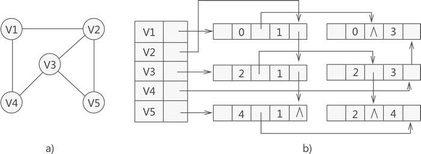

图：
线性表中的元素之间仅有前趋和后继的线性关系；树中的元素有明确的层次关系；图中的任何元素之间都有可能有关系。
图的定义：
图由非空的顶点集合和一个描述顶点之间关系的集合组成。
图的基本术语：
- 顶点和边：图中的结点称作顶点，第i个顶点记作vi，两个顶点vi和vj相关联的部分称作vi和vj之间的一条边，第k条边记作ek
- 无向图：(vi,vj) 和 (vj,vi) 是同一条边
- 有向图：<vi,vj>和 <vj,vi> 是两条不一样的边
- 完全图：在n个顶点的无向图中，若任意两个顶点之间有且只有一条边，总的边数为n(n-1)/2，这样的图称作完全图。且在n个顶点的有向图中，如果任意两个顶点之间有且只有方向相反的两条边，总的边数为n(n-1)，这样的图称作有向完全图
- 邻接顶点：边连起的两个顶点
- 顶点的度：与该顶点相关联的边的条数
- 路径：
- 权值：
- 路径长度：
- 简单路径：若一条路径除了开始结点和结束节点之外，其他顶点均不相同，则成为简单路径
- 子图：
- 连通图和连通分量：任意一对顶点都是连通的，称为连通图。非连通图的最大连通子图称作连通分量
- 强连通图：在有向图中，如果一对顶点，来回都存在路径，则为强连通图
- 强连通分量：有向图中，最大连通子图称为强连通分量
图的存储结构：
图的信息包括顶点信息和边的信息。
对于一个含有n个顶点的图，由于每一个顶点都可能和其他n-1个顶点由联系，因此，边之间关系的实质是一个n*n的矩阵问题。
邻接矩阵表示法：
用矩阵存储图中顶点的信息，1代表边存在，0代表边不存在
无向图的邻接矩阵一定是对称的，而有向图的邻接矩阵不一定对称，表示一个具有n个顶点的有向图需要n2个单元来存储，无向图只需存入上（下）三角阵，故只需n(n+1)/2个单元
无向图邻接矩阵的第i行或第i列的非零元素的个数正好是第i个顶点的度。
有向图邻接矩阵中第i行非零元素的个数为第i个顶点的出度；第i列非零元素的个数为第i个顶点的入度；第i个顶点的度为第i行和第i列非零元素个数之和。
邻接矩阵表示法：
1 | //邻接矩阵的定义形式： |
邻接表表示法：//一个顶点的next、next->next等都是该顶点指向的点
1 | //邻接链表表示法： |
十字链表
对于有向图来说,邻接表是有缺陷的。关心了出度问题,想了解入度就必须要遍历整个图才可以,反之,逆邻接表解决了入度却不了解出度的情况。有没有可能把邻接表与逆邻接表结合起来呢? 答案是肯定的,就是把 它 们整合在一起。这就是我们现在要讲的有向图的 一种存储方法: 十字链表
十字链表的形式可以理解成每一行是一个链表，而每一列又是一个链表
与邻接表不同，十字链表法仅适用于存储有向图和有向网。不仅如此，十字链表法还改善了邻接表计算图中顶点入度的问题。
十字链表存储有向图（网）的方式与邻接表有一些相同，都以图（网）中各顶点为首元节点建立多条链表，同时为了便于管理，还将所有链表的首元节点存储到同一数组（或链表）中。
其中，建立各个链表中用于存储顶点的首元节点结构

首元节点中有一个数据域和两个指针域（分别用 firstin 和 firstout 表示）：
- firstin 指针用于连接以当前顶点为弧头的其他顶点构成的链表；
- firstout 指针用于连接以当前顶点为弧尾的其他顶点构成的链表；
- data 用于存储该顶点中的数据；
十字链表实质上就是为每个顶点建立两个链表，分别存储以该顶点为弧头的所有顶点和以该顶点为弧尾的所有顶点。
注意，存储图的十字链表中，各链表中首元节点与其他节点的结构并不相同
十字链表中普通节点的存储分为 5 部分内容，它们各自的作用是：
- tailvex 用于存储以首元节点为弧尾的顶点位于数组中的位置下标；
- headvex 用于存储以首元节点为弧头的顶点位于数组中的位置下标；
- hlink 指针：用于链接下一个存储以首元节点为弧头的顶点的节点；
- tlink 指针：用于链接下一个存储以首元节点为弧尾的顶点的节点；
- info 指针：用于存储与该顶点相关的信息，例如量顶点之间的权值；

拿顶点 V1 来说，通过构建好的十字链表得知，以该顶点为弧头的顶点只有存储在数组中第 3 位置的 V4（因此该顶点的入度为 1），而以该顶点为弧尾的顶点有两个，分别为存储数组第 1 位置的 V2 和第 2 位置的 V3（因此该顶点的出度为 2）。
对于各个链表中节点来说，由于表示的都是该顶点的出度或者入度，因此没有先后次序之分。
1 |
|
邻接多重表
无向图的存储可以使用邻接表，但在实际使用时，如果想对图中某顶点进行实操（修改或删除），由于邻接表中存储该顶点的节点有两个，因此需要操作两个节点。
为了提高在无向图中操作顶点的效率，本节学习一种新的适用于存储无向图的方法——邻接多重表。
注意，邻接多重表仅适用于存储无向图或无向网。
邻接多重表存储无向图的方式，可看作是邻接表和十字链表的结合。同邻接表和十字链表存储图的方法相同，都是独自为图中各顶点建立一张链表，存储各顶点的节点作为各链表的首元节点，同时为了便于管理将各个首元节点存储到一个数组中。各首元节点结构如图

各区域及其功能为：
- data：存储此顶点的数据；
- firstedge：指针域，用于指向同该顶点有直接关联的存储其他顶点的节点。
可以看到，邻接多重表采用与邻接表相同的首元节点结构。但各链表中其他节点的结构与十字链表中相同

节点中各区域及功能如下：
- mark：标志域，用于标记此节点是否被操作过，例如在对图中顶点做遍历操作时，为了防止多次操作同一节点，mark 域为 0 表示还未被遍历；mark 为 1 表示该节点已被遍历；
- ivex 和 jvex：数据域，分别存储图中各边两端的顶点所在数组中的位置下标；
- ilink：指针域，指向下一个存储与 ivex 有直接关联顶点的节点；
- jlink：指针域，指向下一个存储与 jvex 有直接关联顶点的节点；
- info：指针域，用于存储与该顶点有关的其他信息，比如无向网中各边的权；
综合以上信息，如果我们想使用邻接多重表存储图 3a) 中的无向图，则与之对应的邻接多重表如图 3b) 所示：

从图中，可直接找到与各顶点有直接关联的其他顶点。比如说，与顶点 V1 有关联的顶点为存储在数组下标 1 处的 V2 和数组下标 3 处的 V4，而与顶点 V2 有关联的顶点有 3 个，分别是 V1、V3 和 V5。
1 |
|
图的遍历方式：
深度优先遍历和广度优先遍历：
深度优先遍历（Depth First Search)
1 | //深度优先遍历： |
广度优先遍历（Breath First Search）：
1 | //广度优先遍历： |
最小生成树：
生成树的概念：
如果是一个有n个顶点的连通图，经由这两种遍历DFS、BFS算法遍历的结果，会得到用最好的边来连接所有的顶点，而且不会形成回路，这样的子图是一种树形结构，也就是任意两个顶点之间的路径是唯一的。
这种可连接所有顶点且路径唯一的树形结构称作生成树（spanning tree）或扩展树。
最小生成树：
生成树在实际应用中不仅仅是找出顶点和边，如果一个连通图的边加上权值来表示边的成本、距离等实际问题，则我们希望所产生的生成树的所有边的权值总和最小，具有这样的性质的生成树被称作最小生成树。
Kruskal算法：
该算法每次选取权值最小的边，不用从某顶点出发，然后检查是否形成回路，形成回路的边需要放弃，最终构成最小成本生成树MST。
算法步骤：
- 边的权值首先从小到大排序
- 从所有的未遍历的边中取出最小权值的边，记录此遍历并检查是否形成回路。形成回路的话，此边不能加入到MST中，重新从未被遍历的边中选择；如果未形成回路，则将此边加入到MST中。判断边数是否达到n-1，达到的话，查找结束，反之重复（2）。
1 | //Kruskal算法： |
Prim算法：
Kruskal算法中需要检查所有加入的边是否会形成回路，针对这个问题，Prim提出了Prim算法来避免回路的检查，方法是从某个顶点vi出发，列出顶点所有邻接点的边，选择最小的边加入到MST中，然后删除该边，再加入顶点vj除了和vi相连边之外的所有边，再找出最小的边，依次类推，直到找到n-1条边为止。
算法步骤：
- 选择从某顶点vi开始。
- 将vi的所有边加入。
1 | //Prim算法： |
最短路径：
单源点最短路径问题：
从有向带权图中一个确定的顶点到其余各个顶点的最短路径问题。
Dijkastra提出了一个按路径长度递增的顺序逐步产生最短路径的构造算法。
算法思想：
设置两个顶点集合S和T，集合S中存放已找到最短路径的顶点，集合T中存放当前还没找到最短路径的顶点，初始状态时，集合S中只包含源点，设为v0，然后从集合T中选择到源点路径最短的顶点vm加入到S中，集合S中每加入一个顶点vm，都要修改源点vo到集合T中剩余顶点的最短路径值，集合T中各顶点的新的最短路径值为原来的最短路径长度值与从源点过顶点vm到达该顶点的路径长度中的较小者。不断重复此过程，直到集合T中的顶点全部加入到集合S中为止。(l(vm) = min{l(vm),l(vk)+w(vk,vm)})
1 | //Dijkstra算法：//Graph存储点与点之间的权值（只有两点直接相连的有，不直接相连的点 权值设为无穷） |

过程：
- 1
- 1->3 1->2
- 3->2; 3->5
- 2->4; 2->5
- 5->6; (5->4失败）
- 4->6 (4->5失败）
- 最终：1->3->2->4->6 ; 1->3->2->5
所有顶点对最短路径问题：
在邻接矩阵上做n次迭代，第n次迭代后，邻接矩阵上第i行第j列的元素即为i到j的最短路径。
假设求顶点i到顶点j的最短路径，1<= i, j <= n。
首先，考虑从i到j是否有中间点顶点1，路径：i->1->j，若有则路径长度取(i, j)和(i, 1, j)的较小值
其次，考虑有无中间点为顶点2的情况
再次，顶点3的情况
······
Floyed算法：
设min矩阵存储最短距离，其初始值为图的邻接矩阵，依次以每个顶点为中间点，重新计算各对顶点之间的最短距离1
2
3
4
5
6
7
8
9
10
11//Floyed算法：
void Floyed(int min[maximum][maximum])
{
int i, j, k;//起点，终点，中间点
for(k=0; k<maximum; k++)//中间点
for(i=0; i<maximum; i++)//起点
for(j=0; j<maximum; j++)//终点
if(min[i][j] > min[i][k]+min[k][j])
min[i][j] = min[i][k] + min[k][j];
//经过中间点k的距离小于由i到j的直接距离，此时，用经由k的距离作为新的最短距离
}
拓扑排序：
在一个较大的工程通常被划分为若干个子工程，我们把这些工程称为活动，在整个工程中，有些活动必须在其他活动完成之后才能进行，还有一些活动可以安排在任何时间开始。
为了形象地反映出整个工程中各个活动，图中的有向边代表活动的先后关系，即有向边的起点活动是终点活动的前序活动，只有起点活动完成之后，其终点活动才能进行。这种顶点表示活动、边表示活动间先后关系的有向图称作顶点活动图（Activity on Vertex Network ,AOV)
AOV网中不允许有回路，这就意味着某项活动不能以自己为先决条件。
1 | //拓扑排序 |
关键路径：
在项目管理中，关键路径是指网络终端元素的元素的序列，该序列具有最长的总工期并决定了整个项目的最短完成时间。 关键路径的工期决定了整个项目的工期。 任何关键路径上的终端元素的延迟将直接影响项目的预期完成时间（例如在关键路径上没有浮动时间）。 一个项目可以有多个，并行的关键路径。
练习：
1.遍历算法：
图的深度优先遍历和广度优先遍历算法：1
2
3
4
5
6
7
8
9
10
11
12
13
14
15
16
17
18
19
20
21
22
23
24
25
26
27
28
29
30
31
32
33
34
35
36
37
38
39
40
41
42
43
44
45
46
47
48
49
50
51
52
53
54
55
56
57
58
59
60
61
62
63
64
65
66
67
68
69
70
71
72
73
74
75
76
77
78
79
80
81
82
83
84
85
86
87
88
89
90
91
92
93
94
95
96
97
98
99
100
101
102
103
104
105
106
107
108
109
110
111
112
113
114
115
116
117
118
119
120
121
122
123
124
125
126
127
128
129
130
131
132
133
134
135
136
137
138
139
140
141
142
143
144
145
146
147//对图进行深度优先遍历和广度优先遍历：
typedef struct Node{
int data;//第一个邻接顶点
struct Node *next;//下一个邻接顶点指针
}GraphNode;
GraphNode Graph[maximum];//顶点数组
int rear = -1;//队尾指针
int front = -1;//队头指针
//出队/入队操作：
void AddQueue(int *h, int x)
{
if(rear == maximum-1)
{
printf("队列已满\n");
return ;
}
rear++;
h[rear] = x;
return;
}
int Delqueue(int *h)
{
int e;
if(rear == front)
{
printf("Queue is empty\n");
return -1;
}
front++;
e = h[front];
h[front] = 0;
return e;
}
//建立邻接表：
void CreateAdjacentTable(int v1, int v2)
{
GraphNode* newnode;
newnode = (GraphNode*)malloc(sizeof(GraphNode));
newnode->data = v2; newnode->next = NULL;
GraphNode* p;
p = &Graph[v1];
while(p->next != NULL)
p = p->next;
p->next = newnode;
}
//深度优先遍历：
void DFS(int *visited, int v)
{
GraphNode* p;
visited[v] = 1;
printf("%d->",v);
p = Graph[v].next;
while(p != NULL)
{
if(visited[p->data] == 0)
DFS(visited, p->data);//递归！
p = p->next;
}
}
//广度优先遍历：
void BFS(int *visited, int v, int *Queue)
{
GraphNode* p;
AddQueue(Queue, v);
visited[v] = 1;
printf("%d->",v);
while(front != rear)//队列！
{
v = Delqueue(Queue);
p = Graph[v].next;
while(p != NULL)
{
if(visited[p->data] == 0)
{
AddQueue(Queue, p->data);
visited[p->data] = 1;
printf("%d->",p->data);
}
p = p->next;
}
}
}
//显示邻接表：
void DisplayGraph(GraphNode* h)
{
GraphNode* p;
p = h->next;
while(p != NULL)
{
printf("%d->",p->data);
p = p->next;
}
printf("\n");
}
//主函数：
int main()
{
int souce, destination;
int i;
for(i=0; i<maximum; i++)//顶点初始化
{
Graph[i].data = i;
Graph[i].next = NULL;
}
printf("输入图的邻接表\n");
while(1)
{
scanf("%d",&souce);
if(souce == -1)
break;
if(souce >= maximum)
{
printf("顶点超出范围，重新输入:\n");
scanf("%d",&souce);
}
scanf("%d",&destination);
if(destination == souce)
{
printf("出现循环，重新输入:\n");
scanf("%d", &destination);
}
if(destination >= maximum)
{
printf("顶点超出范围，重新输入:\n");
scanf("%d",&destination);
}
CreateAdjacentTable(souce, destination);
}
printf("图的邻接表：\n");
for(i=0; i<maximum; i++)
{
printf("Vertex %d :->",i);
DisplayGraph(&Graph[i]);
}
int visited[maximum];
for(i = 0; i < maximum; i++)
visited[i] = 0;
printf("深度优先遍历：");
DFS(visited, 0);
printf("\n");
for(i = 0; i < maximum; i++)
visited[i] = 0;
printf("广度优先遍历：");
int Queue[maximum];
BFS(visited, 0, Queue);
printf("\n");
}
2.Prim算法：
先构造边结点链表，然后找出最小生成树：1
2
3
4
5
6
7
8
9
10
11
12
13
14
15
16
17
18
19
20
21
22
23
24
25
26
27
28
29
30
31
32
33
34
35
36
37
38
39
40
41
42
43
44
45
46
47
48
49
50
51
52
53
54
55
56
57
58
59
60
61
62
63
64
65
66
67
68
69
70
71
72
73
74
75
76
77
78
79
80
81
82
83
84
85
86
87
88
89
90
91
92
93
94
95
96
97
98
99
100
101
102
103
104
105
106
107
108
109
110
111
112
113
114
115
116
117
118
119
120
121
122
123
124
125
126
127
128
129
130
131
132//Prim算法：
struct Edge{
int vertex1;
int vertex2;
int w;
int marked;
struct Edge* next;
}
void Prims(Edge *h, int *visited, int index)
{
Edge *p;
Edge *min;
min = (Edge*)malloc(sizeof(Edge));
int i;
int edgenum = 0;
int weightsum = 0;
int vertex;
min->w = 100;
p = h;
while(p != NULL)
{
if(p->vertex1 == index)
if(p->w < min->w)
min = p;
p = p->next;
}
min->marked = 1;
visited[min->vertex1] = 1;
visited[min->vertex2] = 1;
edgenum++;
weightsum = min->w;
printf("最小生成树：\n");
printf("(%d %d %d)->",min->vertex1, min->vertex2, min->w);
while(edgenum < maximum-1)
{
min->w = 100;
p = h;
while(p != NULL)
{
if(p->marked == 0)
if((visited[p->vertex1] == 1 && visited[p->vertex2] == 0) || (visited[p->vertex1] == 0 && visited[p->vertex2] == 1))
if(p->w < min->w)
min = p;
p = p->next;
}
min->marked = 1;
visited[min->vertex1] = 1;
visited[min->vertex2] = 1;
printf("(%d %d %d)->",min->vertex1, min->vertex2, min->w);
edgenum++;
weightsum += min->w;
}
printf("\n");
printf("总权值：%d",weightsum);
printf("\n");
}
//建立图：
Edge *Create_Edge(int souce, int destination, int wegiht)
{
Edge *h;
Edge *node;
Edge *p;
int i;
int num = 0;
h = (Edge*)malloc(sizeof(Edge));
h->vertex1 = souce;
h->vertex2 = destination;
h->w = weight;
h->next = NULL;
p = h;
while(1)
{
scanf("%d",souce);
if(souce == -1)
break;
if(souce >= maximum)
{
printf("顶点超出范围，重新输入:\n");
scanf("%d",&souce);
}
scanf("%d",&destination);
if(destination == souce)
{
printf("出现循环，重新输入:\n");
scanf("%d", &destination);
}
if(destination >= maximum)
{
printf("顶点超出范围，重新输入:\n");
scanf("%d",&destination);
}
scanf("%d", &weight);
node = (Edge*)malloc(sizeof(Edge));
node->vertex1 = souce;
node->vertex2 = destination;
node->w = weight;
node->marked = 0;
node->next = NULL;
p->next = node;
p = node;
}
return h;
}
//显示图
void DisplayEdge(Edge *h)
{
Edge *p = h;
while(p != NULL)
{
printf("(%d %d %d)->",p->vertex1, p->vertex2, p->w);
p = p->next;
}
printf("\n");
}
//主函数：
int main()
{
Edge *head;
int visited[maximum];
for(int i=0; i<maximum; i++)
visited[i] = 0;
printf("输入图：\n");
head = Create_Edge(0, 1, 4);
printf("边结点：\n");
DisplayEdge(head);
int index = 0;
visited[index] = 1;
Prims(head, visited, 0);
}
后续完善 所有顶点对最短距离问题 、 关键路径 、 各种应用 以及 例题 加 模板？